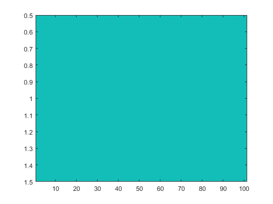
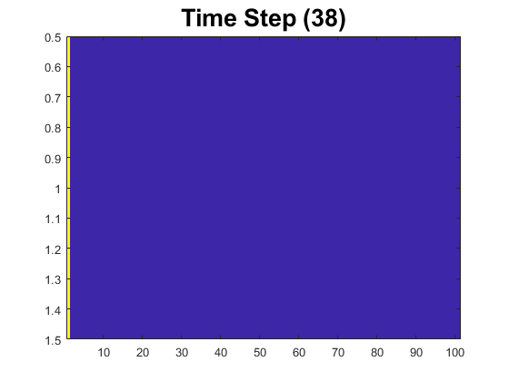

Contents
- Section for setting up the game plane and displaying it
- Section for defining the goal location and initializing states
- Section for defining all possible actions and creating state-action pairs
- Section for initializing Q-values and other parameters
- Main loop for running episodes and updating Q-values using Q-learning
- Section for generating an episode based on the learned policy
% Clear the command window, clear workspace variables, and close all figures clc; clear; close all;
Section for setting up the game plane and displaying it
game_plane_size = 101; % Define the size of the game plane Plane = ones(1, game_plane_size); % Initialize the game plane with all free spaces (1: free, 0: barrier) imagesc(Plane); % Display the game plane as an image
Section for defining the goal location and initializing states
Goal = [1, 0]; % Define the coordinates of the goal location % Find all states (positions) where the game plane is free [R, C] = find(Plane == 1); AllStates = [R' C' - 1]; % Store the coordinates of all free states nStates = size(AllStates, 1); % Get the total number of free states
Section for defining all possible actions and creating state-action pairs
Define the possible actions as position offsets (AllActions matrix)
AllActions = [1:10; 11:20; 21:30; 31:40]'; % Each row represents a set of actions for each state % Calculate the total number of possible actions nActions = size(AllActions, 1) * size(AllActions, 2); % Create a matrix (AllStateActionPairs) to store all state-action pairs AllStateActionPairs = zeros(nStates * nActions, 3); % Populate the AllStateActionPairs matrix with state-action pairs for i = 1:nStates for j = 1:size(AllActions, 2) % Repeat the current state (coordinates) for each action in the current set % and append the corresponding action to create the state-action pair AllStateActionPairs(1 + size(AllActions, 1) * (4 * (i - 1) + j - 1) : size(AllActions, 1) * (4 * (i - 1) + j), :) = [repmat((AllStates(i, :)), size(AllActions, 1), 1), AllActions(1:size(AllActions, 1), j)]; end end
Section for initializing Q-values and other parameters
nAllStateActionPairs = size(AllStateActionPairs, 1); % Get the total number of state-action pairs Counter = zeros(nAllStateActionPairs, 1); % Initialize a counter for each state-action pair Q = zeros(nAllStateActionPairs, 1); % Initialize Q-values for each state-action pair gamma = 0.99; % Set the discount factor for future rewards nEpisode = 10; % Define the number of episodes for training epsilon = 0.15; % Define the exploration rate for epsilon-greedy policy % Initialize the policy randomly by assigning random actions to each state Policy = randi(nActions, nStates, 1); alpha = 0.1; % Learning rate for updating Q-values
Main loop for running episodes and updating Q-values using Q-learning
for e = 1:nEpisode % Set the initial state for the current episode State = [1, 100]; % Exploration-exploitation loop within each episode while true % Find the index of the current state in the AllStates array indexOfState = find(ismember(AllStates, State, 'row')); % Choose an action based on the policy with epsilon-greedy exploration randomNum = rand; if randomNum < ((1 - epsilon) + (epsilon / nActions)) At = Policy(indexOfState); % Exploitation: choose action from the policy else At = randi(nActions); % Exploration: choose a random action end % Get the new state and the immediate reward based on the selected action [NewState, Reward] = Environment(AllStates, State, At, Goal); % Check if the agent has reached the goal state, then exit the loop if ismember(NewState, Goal, 'row') break; end % Find the indices of the current state-action pair in the AllStateActionPairs matrix indexInPairs = find(ismember(AllStateActionPairs, [State, At], 'row')); % Find the indices of the next state-action pairs (for the next time step) indexOfNextStateInPairs = find(ismember(AllStateActionPairs(:, [1, 2]), NewState, 'row')); a_prime = Policy(find(ismember(AllStates, NewState, 'row'))); %#ok indexOfNextStateInPairs = indexOfNextStateInPairs(a_prime); % Update the Q-value for the current state-action pair using the Q-learning formula Q(indexInPairs) = Q(indexInPairs) + alpha * (Reward + gamma * Q(indexOfNextStateInPairs) - Q(indexInPairs)); % Transition to the new state for the next time step State = NewState; % Update the policy using the current Q-values Policy = PolicyImprovementUsingQ(Q, nActions); end % Display the current episode number disp(['Episode: ', num2str(e)]); end
Episode: 1 Episode: 2 Episode: 3 Episode: 4 Episode: 5 Episode: 6 Episode: 7 Episode: 8 Episode: 9 Episode: 10
Section for generating an episode based on the learned policy
Set the initial state for generating an episode
initialState = [1, 100]; display = 1; % Set to 1 for displaying the episode, otherwise set to 0 epsilon = 0; % Exploration rate set to 0 for exploiting the learned policy qPrediction = 0; % Set to 0 as it is not used in this case % Generate an episode based on the learned policy [VisitedStates, Actions, VisitedRewards] = GenerateEpisode(Plane, AllStates, AllActions, Policy, initialState, Goal, epsilon, display, qPrediction);